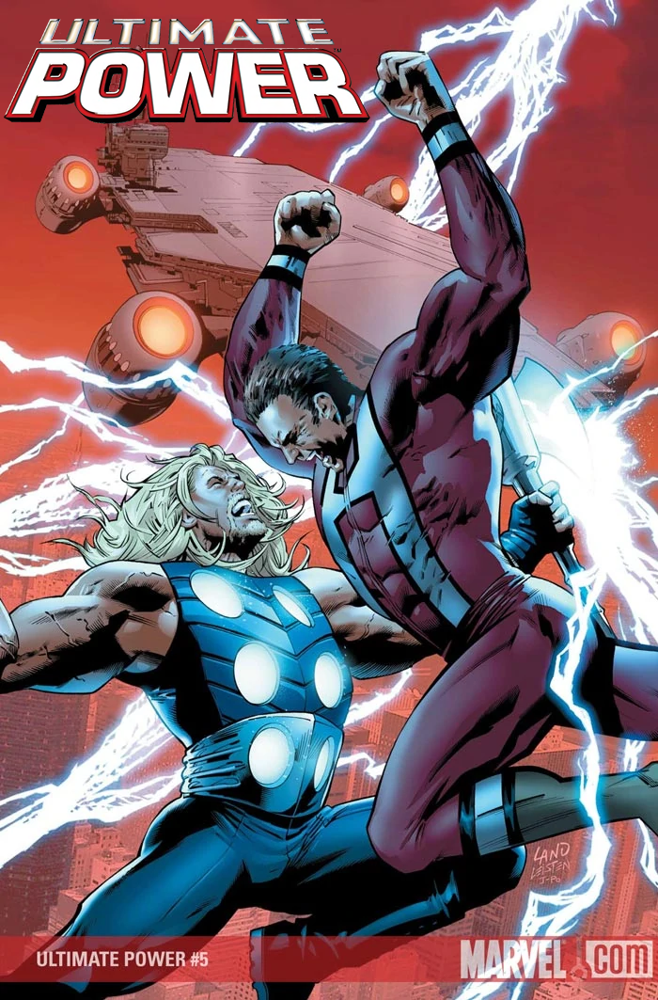

Simulation-Based Power Analysis
This tutorial is designed to be a quick-start guide for conducting simulation-based power analyses in R, Python, and Stata. We focus particularly on power for mixed effects models, but the principles employed can be repurposed for any model and study design. The tutorial is suitable for anyone with a intermediate understanding of mixed effects models and coding in either R, Python, or Stata.
While high-level packages exist in some of these languages for conducting simulation-based power analysis (e.g., the R packages {simr}, {longpower}, and {simglm}), such packages abstract away the details of conducting simulations and thus are best used after gaining an understanding of the power simulation process. In addition, rolling your own simulations from scratch provides much more flexibility to tackle different study designs and models - and it’s fun!
We are always grateful for any feedback you are willing to provide about our tutorials! Please email help@iq.harvard.edu with any thoughts.
Table of Contents
- Canned Power Analysis
- Simulation-based Power Analysis
- Power of What?
- R Examples
- Python Examples
- Stata Examples
- Software Comparison
- Resources

Contributors
The contents of these workshops are the result of a collaborative effort from members of the Data Science Services team at the Institute for Quantitative Social Science at Harvard University. The main contributors are Steve Worthington and Dan Yuan, with additional feedback from Jinjie Liu and Noah Greifer.